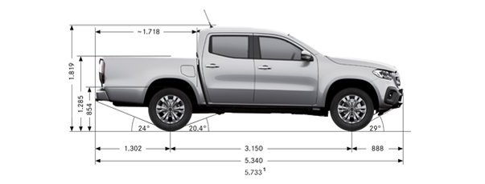
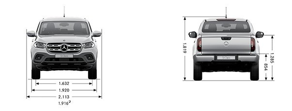

.
■ Mercedes-Benz Pkw GALERIE
X-klasse
470
テンプレに戻る
本サイトは、戦後のメルセデス・ベンツの画像を車種別、時系列順に掲載しています。
Limousine / Kombi
A-klasse
B-klasse
C-klasse
E-klasse
S-klasse
Großer・Maybach
Coupé / Roadster
CLA
CLC・C-Coupé
CLK
CE・E-Coupé
CLS
SEC・CL・S-Coupé
SLK・SLC
SL・SLC
Supersport
MPV / Geländewagen
GLA
GLK・GLC
X-klasse
ML・GLE
GL・GLS
G-klasse
Kastenwagen / Pick-up
Vaneo・Citan
V-klasse・Vito
X-klasse
X-klasse
470
11/2017 -
Schwester wagen
Renault Alaskan
2017
Nissan Navara
2015 -
abmessungen
 